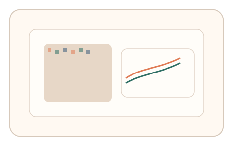
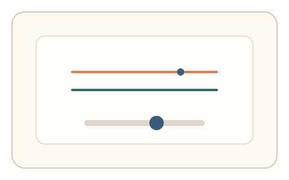
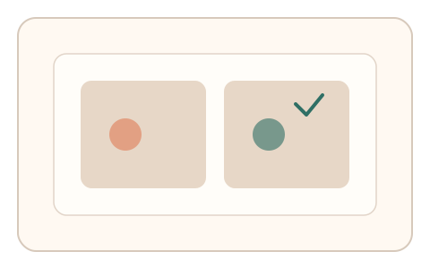

#173
Reverse Brainstorming - Round 4
已扩展
渲染一致性挑战
在渲染中嵌入细微帧级差异，要求用户交互与真实渲染细节一致，从而识别代理渲染与自动化。
概念原文
在验证码渲染中嵌入不可见的帧级随机细节（子像素扰动/微小噪声/渐变相位），并在交互过程中检测用户路径与渲染细节的一致性。
代理渲染难以完整重现微渲染细节，一致性检测可触发异常。
研究背景
浏览器渲染会因设备、字体与子像素处理存在细微差异，这类差异已被用于设备指纹识别。利用渲染微差作为挑战，可在交互中检测“真实屏幕呈现”与“代理渲染/回放”的不一致。
核心机制
- 在图形中嵌入子像素级扰动、微噪声或渐变相位差。
- 要求用户执行精细对齐/选择操作，响应依赖真实渲染细节。
- 检测交互轨迹与渲染细节的一致性，并结合时序特征。
用户流程
- 步骤 1：用户看到带微细节的渲染图形与对齐提示。
- 步骤 2：用户拖拽或点击完成精细对齐。
- 步骤 3：系统比对对齐误差与渲染一致性输出判定。
判定信号
对齐误差与局部像素梯度的相关性
真实渲染细节会影响人类对齐选择。
帧级微差对反应时的影响
代理渲染难以同步帧级细节与交互时序。
判定逻辑
检测“交互路径‑真实渲染”一致性：若轨迹对细节无响应或与真实像素梯度偏离，判定异常；同时结合反应时窗与微扰响应。
对抗面
- 截屏后人工标注或远程人机协作
- 脚本读取渲染缓存并模拟对齐轨迹
防御与缓解
- 每次会话随机化渲染细节与相位
- 引入时间窗与轻微动态变化，降低静态截屏可用性
- 叠加输入动态信号（微抖动/过冲）作为辅判
可达性与风险
对低视力用户提供放大与高对比替代任务；提供非视觉通道的等效验证。
- 不同显示器与缩放设置可能带来误差
- 过度细小的渲染差异可能降低可用性
可视化状态

状态 1：微渲染差异
图形包含子像素扰动与微噪声，提示进行对齐。

状态 2：精细对齐
用户拖拽对齐参考线，系统采集轨迹与停顿。

状态 3：一致性判定
比对交互结果与真实像素梯度的一致性。
参考资料
Canvas fingerprinting
说明渲染差异可用于设备指纹识别。
Device fingerprint
说明设备/浏览器特征的可区分性。
Subpixel rendering
说明子像素渲染带来的细微视觉差异。